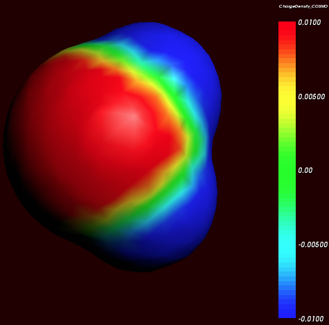
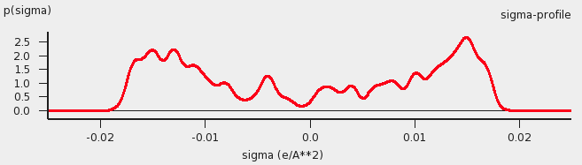

COSMO-RS theory¶
Below some of the COSMO-RS theory is explained, but a more complete description can be found in Refs. [1] and [2].
Although in principle all of chemistry can be predicted by appropriate solutions of the Schrödinger Equation, in practice due to the extreme mathematical complexity of doing so only the smallest systems can be computed at an accuracy rivaling that of the most accurate experiments. However, with suitable approximations, for isolated molecules of up to a few hundred atoms these days quite reasonable results can be obtained. Of course, this means that direct computation of thermodynamic properties is out of reach. Thermodynamic properties can only be computed as an average over a large number of configurations of a large number of molecules. To address this, people have typically resorted to so-called Molecular Dynamics (MD) or Monte Carlo (MC) methods where configurations are generated either by numerically simulating the atomic motions over discrete time steps or by random generation, in either case using empirical molecular models parametrized against quantum mechanical calculations and experimental data to compute energies. However, even these approaches often fall short in generating sufficiently large ensembles, and there is little chance of that situation improving dramatically in the near future.
Around 1995, Andreas Klamt, then working for Bayer, hit upon an approach that made it possible to compute the details of molecules quantum mechanically and subsequently use these details in an approximate statistical mechanics procedure [3]. This approach is called COSMO-RS (COnductor like Screening MOdel for Realistic Solvents) and has proven to be quite powerful. It may currently be the best link between the world of chemical quantum mechanics and engineering thermodynamics.
Thermodynamic reference states can be chosen arbitrarily. They do not even have to be physically realizable, as long as it is consistently used. We are at liberty to choose as reference state a molecule embedded in a perfect conductor, that is a material with an infinitely large dielectric constant (‘the perfectly screened state’). Suppose a molecule A resides in a molecule shaped cavity. Everywhere outside of this cavity is conductor material. Although it would be hard to realize this in practice, it is relatively easy to do quantum mechanical calculations on this hypothetical state. Since the molecule will in general have a charge distribution and therefore possess an electric field, it will polarize the embedding medium. That will result in another electric field, given by a charge distribution on the surface of the molecule shaped cavity. This charge distribution is generated by the quantum mechanical calculations, for example with ADF if one uses COSMO. From now on the surface of the molecule shaped cavity will be called molecular surface, and the volume of the molecule shaped cavity will be called molecular volume.
{kind=link}
Cosmo charge density on the COSMO surface of water (picture made with AMSview).
Although the actual charge distribution on the molecular surface will be highly detailed, let us for the moment consider the molecular surface as consisting of segments with a constant charge density (i.e. the detailed charge distribution averaged over segments). Now instead of the single molecule A consider, as an arbitrary example, a fluid consisting of three types of molecules: A, B and C. In a fluid not too close too the critical temperature, the molecular surfaces present in the fluid will all be in close contact. That means that the segments of constant density introduced above are in close contact.
We now compare our molecule A in the fluid with our chosen reference state. Any segment of the molecular surface with a charge density of \(\sigma_i\) will be aligned with a segment with charge density \(\sigma_j\) of another molecule. If the two charge densities happen to be opposite (i.e. \(\sigma_i+\sigma_j=0\)) the charges required for achieving the perfectly screened state will vanish. However, this will not happen too often and in general an excess charge density is left of \(\sigma_i+\sigma_j\) between the two segments. From electrostatic theory it follows that this introduces an energy penalty proportional to the segment size and \((\sigma_i+\sigma_j)^2\) . In principle this gives a way to compute the chemical potential of component A, by going over all possible conformations of a large number of molecules A, B and C (in their proper molar fractions) and do computations on the statistical ensemble. However, in practice that would be similar to doing Molecular Dynamics calculations using empirical structure models and about as computationally prohibitive. Instead, an approximation can be made that is not easily justified a priori and must be judged by the results of subsequent simulations. This assumption is that all segments in the fluid are able to make contact independent of one another. In a way it can be said, that the segments are cut loose from the original (rigid) molecular surfaces.
As one would guess, the approximation of independent segments makes the mathematics of computing ensemble properties quite tractable. In fact, computing the chemical potential of component A (or B or C) in the mixture by means of the COSMO-RS and related methods takes in the order of seconds on a normal PC (given the results of quantum mechanical calculations that may have taken days, of course). Note that the molecular surface around the molecule is divided rather arbitrarily in segments and that the assumption was that the segment of one molecule will overlap perfectly with that of another. How can this be true? The answer is that one can split up the molecular surface into segments in an infinite number of ways. However, the molecules in a fluid are always in contact with another. At any given time, molecule A will be in contact with a number of other molecules and share patches of, for example, 7 square Angstroms of its surface with each of the surrounding molecules. At that particular time, the segments will be those patches. A split second later, of course, there will be a different set of segments. That is not a problem. One needs to do statistical mechanics with charged segments for which one needs to know how many 7 square Angstrom segments a particular molecule brings into the fluid and the probability of any segment having an average charge density \(\sigma\) (for all values of \(\sigma\)). Both can be computed from the results of the quantum mechanical calculation on the molecule in the perfect conductor. Just to get a flavor, in the figure below the so-called \(\sigma\)-profile of water is given. These are the statistical distributions of possible segments over charge densities multiplied by the surface area of the molecular volume. The \(\sigma\)-profile relates to the detailed charge distribution on the molecular surface.
{kind=link}
\(\sigma\)-profile of water (picture made with the CRS-GUI), smoothed curve, Delley COSMO surface construction
In principle vapor pressures of pure liquids can be computed directly with COSMO-RS. COSMO-RS calculations yield the chemical potential of a component in a liquid with respect to the perfectly screened reference state. It is easy to compute the energy difference between the reference state and the gas phase by doing an additional quantum mechanical calculation (of the isolated molecule). However, often experimental vapor pressures for the pure liquid are known. Using such experimental data for pure liquids can help in predicting the correct partial vapor pressures in a mixture.
COSMO-RS combinatorial term¶
In Ref. [1] a thermodynamically inconsistent combinatorial contribution \(\mu_i^{comb}\) to the chemical potential was used:
In this equation \(q_i\) is the surface area of the molecular volume of compound i, \(x_i\) is the molar fraction of compound i in the solution, and \(\lambda\) is a COSMO-RS parameter.
The importance of using a thermodynamically consistent combinatorial contribution is discussed in Ref. [2]. In the ADF COSMO-RS program it is possible to use a thermodynamically consistent combinatorial contribution of the form (Equation C.4 of Ref. [2], with \(\lambda_0 = \lambda_1 = \lambda_2 = \lambda\)):
In this equation \(r_i\) is the molecular volume of compound i. In the ADF COSMO-RS program this combinatorial term is used by default, see also Ref. [4].
Fast approximation for COSMO-RS calculations¶
In the 1998 COSMO-RS model each segment of the molecular surface has a charge density of \(\sigma_v\) , but also a second charge density \(\sigma_v^\perp\) , which is a descriptor for the correlation between the charge density on the segment with its surrounding. In the original ADF COSMO-RS implementation this was treated as a 2-dimensional problem, in the fast approximation this is effectively reduced to 1-dimension. Starting from COSMO-RS 2010 this fast approximation is now the default. This approximation reduces the computation time, especially in cases of more than 1 compound.
Temperature dependent hydrogen bond interaction¶
In Ref. [2] a temperature dependent hydrogen bond interaction is suggested, which is used by default in the ADF COSMO-RS program. The temperature dependence (Equation 6.2 of Ref. [2]) is of the form:
Note that here the correct formula is used with a plus sign before 20 kJ/mol (there is a sign error in Equation 6.2 of Ref. [2], see online ‘List of Errata in the COSMO-RS book’ by Andreas Klamt), such that this factor goes to zero for large T. In this equation R is the gas constant and T the temperature (in Kelvin). In the ADF COSMO-RS program the hydrogen bond interaction of Ref. [1] is multiplied by this factor fhb (T) to make the hydrogen bond interaction temperature dependent.
References
| [1] | (1, 2, 3) A. Klamt, V. Jonas, T. Bürger and J.C. Lohrenz, Refinement and Parametrization of COSMO-RS. J. Phys. Chem. A 102, 5074 (1998) |
| [2] | (1, 2, 3, 4, 5, 6) A. Klamt, COSMO-RS From Quantum Chemistry to Fluid Phase Thermodynamics and Drug Design, Elsevier. Amsterdam (2005), ISBN 0-444-51994-7. |
| [3] | A. Klamt, Conductor-like Screening Model for Real Solvents: A New Approach to the Quantitative Calculation of Solvation Phenomena. J. Phys. Chem. 99, 2224 (1995) |
| [4] | C.C. Pye, T. Ziegler, E. van Lenthe, J.N. Louwen, An implementation of the conductor-like screening model of solvation within the Amsterdam density functional package. Part II. COSMO for real solvents. Can. J. Chem. 87, 790 (2009) |